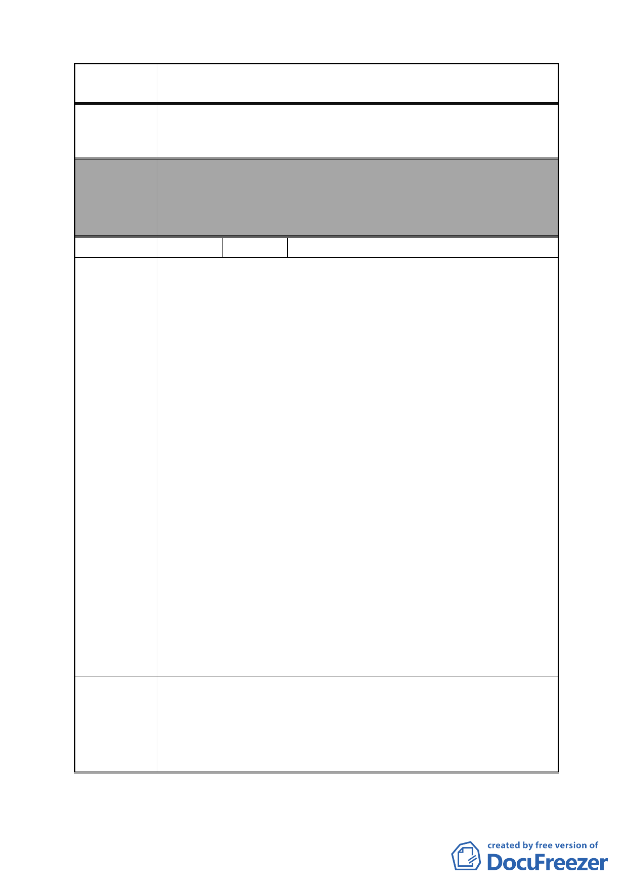

案名
變更臺北市南港區鐵路地下化沿線土地主要計畫案
發展腹地。
4.敬請市府重新評估檢討「北部流行音樂中心」一案。
委員會
決議
編號
陳情理由
建議辦法
本案除文字誤繕應再作修正外，其餘依市府本次會議所送修
正計畫書內容通過。
（依市府本次會議所送修正計畫書，業將陳情地點剔除於市
地重劃範圍）
45 陳情人 李珮瑜
1.按「變更台北市南港區鐵路地下化沿線土地主要計畫案」第
43 頁（五）：「本計畫範圍內人口密集地區得經本府同意後
剔除納入重劃範圍內」。向陽路 84 號至 110 號是人口密集的
地區，故應予以剔除。
2.向陽路 84 號至 110 號有些住戶於明末清初就世代長居此
地，土地卻不斷被政府強迫徵收，現在就連這最後的棲身之
所也要徵收；為此，當地居民感到非但沒有受到政府的照
顧，反而是遭受逼迫。
3.向陽路 84 號至 110 號是一個完整區塊的土地，將來必有其
發展的空間。
4.發展南港的首要原則為「讓更多的居民及商家湧入南港」，
所以將 C 區變更為住商混合區比公園用地更為恰當。
5.若建商來投資，住戶能得到更優渥的補償，政府也不需要支
付拆遷補償費。況且政府所能提供的拆遷補償費太少，如此
將導致居民無法在南港購屋，流離失所。
6.各社區可興建小型公園；因為忙碌的現代人會優先選擇社區
內的小型公園休憩。
7.大型公園容易聚集遊民，且易成為犯罪的場所、治安的死
角，若設在玉成國小及南港高中的對面，易造成學生安全上
的隱憂。
8.基於上述，政府可以省下一筆鉅款，真正花用在南港居民的
身上。如：減免工業區轉為商業區之 45%的回饋。
1.C 區向陽路 84 號至 110 號建物及土地剔除，不納入重劃範
圍內。
2.將 C 區變更為住商混合區（向陽路 84 號至 110 號建物及土
地除外）。
3. C 區不興建大型公園。
- 49 -